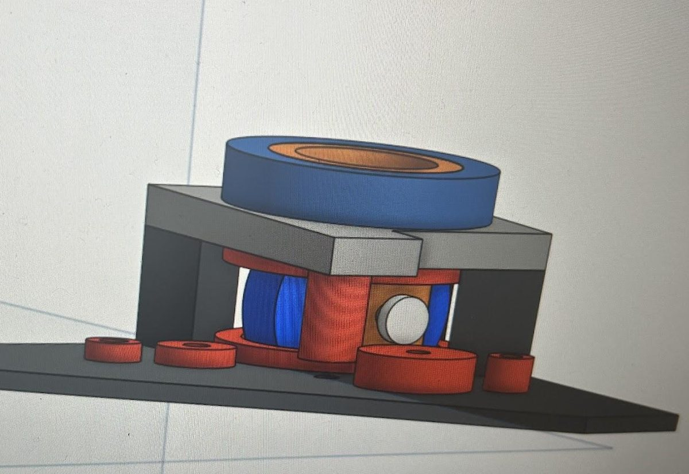
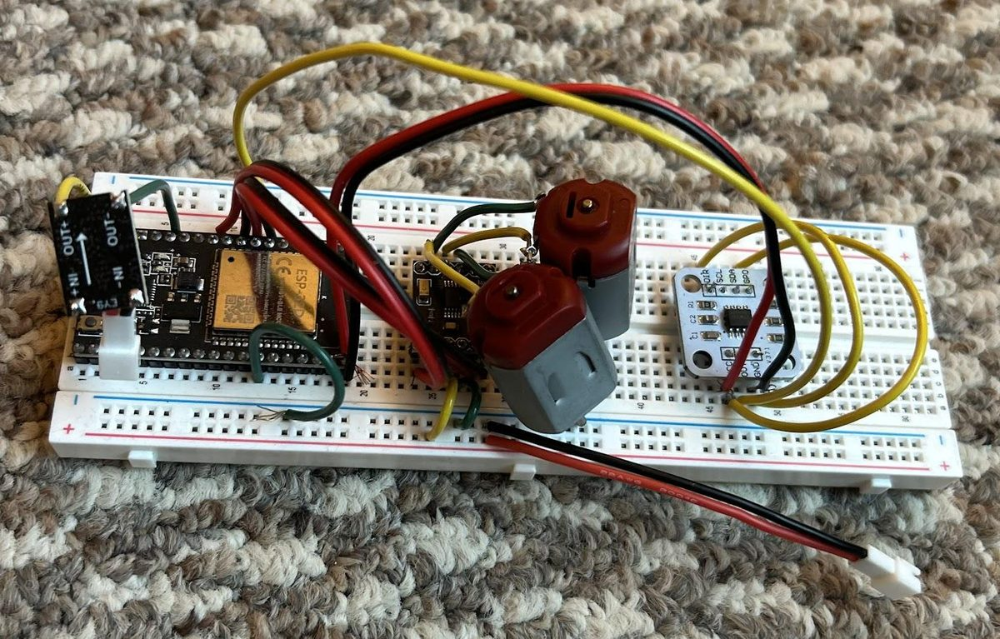
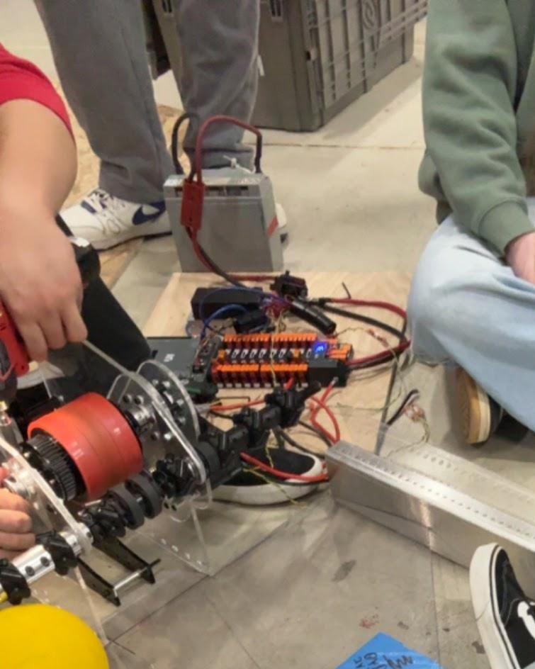
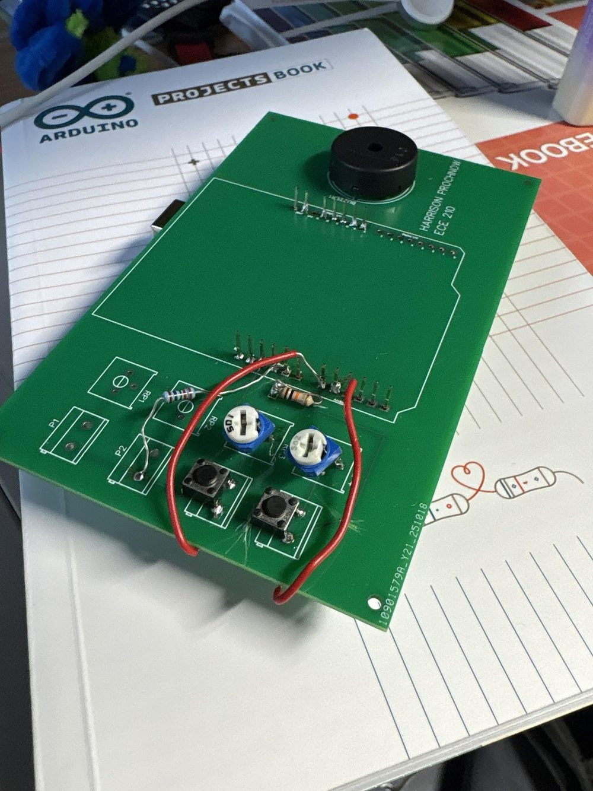

Harrison Prochnow
I build robot software, circuit boards, and control systems.
I'm a computer engineering student at UW–Madison with hands-on experience in robotics software, PCB design, electrical systems, and controls. I've led student engineering teams and work across hardware and software, which is what the projects below show.
- University
- University of Wisconsin–Madison, College of Engineering
- Degree
- B.S. Computer Engineering, expected May 2029
- GPA
- 4.0
Projects
Five projects, from a robot drivetrain to a circuit board for a competition robot. Each one covers what I built, what I used, and how it works.
- Mini Swerve BotA differential swerve robot and the ESP32 code that drives it.
- Battery Management UnitA hot-swappable, telemetry-enabled board for Wisconsin Robotics.
- Electronics Test BoardA bench board for PID tuning mechanisms off the robot.
- Interface StructureThe 2024 FRC 930 robot code, built to run in simulation and on hardware.
- Tunable KeyboardA custom PCB with per-key tuning, designed and assembled by me.
Mini Swerve Bot
A 6 in × 6 in differential swerve-drive robot, with a C++ program I wrote to run it on an ESP32.
- Built with
- ESP32, DC130 motors, DRV8833 motor controllers, AS5600 encoders
- Software
- C++ with PlatformIO
How the module works
A swerve drive steers every wheel on its own, so the robot can travel in any direction while facing any other. This robot uses a differential design: two motors work together to spin the wheel and to turn the module.
Hardware and software
The DC130 motors are driven through DRV8833 motor controllers, and AS5600 encoders provide position feedback. The ESP32 program ties these parts together. Fig. 1 shows the CAD for the module, and Fig. 2 shows the breadboard I used to test the electronics.


Battery Management Unit
A hot-swappable Battery Management Unit with telemetry for the Wisconsin Robotics competition robot.
- Team
- Wisconsin Robotics, electrical team
- Built with
- Altium Designer
- Controller
- TI LM74910-Q1, one per battery input
- Parts cost
- About $53 per board. Full bill of materials
What it does
Each battery input runs through an ORing controller that drives two N-channel MOSFETs. The controller acts as an ideal diode, and it also protects against reverse connection, overvoltage, and overcurrent. Two inputs feed one shared output, so one battery can be swapped while the other keeps the robot powered.
Choosing an approach
I started by sketching four ways to decide which battery powers the load: a manual toggle switch, a microcontroller, hardware logic built from op amps, and a dedicated BMS controller chip for the power path. Fig. 3 redraws that sketch. The final board uses a dedicated controller on each battery input, with a dual op amp, a dual comparator, and a 3.3 V linear regulator alongside.
Choosing capacitors
Ceramic capacitors can lose capacitance under DC bias. The 430 pF capacitors are C0G, the 0.1 µF and 0.33 µF capacitors are X7R, and most of the small parts are 0402 to save board space.
Key parts
The bill of materials has 28 line items. These are the ones that define the design.
| Function | Part | Details |
|---|---|---|
| ORing and protection | LM74910-Q1, Texas Instruments (2) | Ideal-diode ORing with reverse, overvoltage, and overcurrent protection and load disconnect. Drives two external N-channel MOSFETs. |
| Power switches | BSC034N10LS5, Infineon (4) | 100 V N-channel MOSFETs, two per battery input. |
| Current sensing | RL1632T4F-R002 (2) | 2 mΩ, 1 W shunt resistors, one per battery input. |
| Surge and diode protection | SMCJ36A (2), STPS5045SG (2) | A 36 V TVS diode and a 45 V, 50 A Schottky diode, one of each per battery input. |
| Output capacitance | ECA-1HM471 (8) | 470 µF, 50 V aluminum electrolytic capacitors. |
| Monitoring | OPA2316-Q1 (1), TLV7022 (1) | A dual op amp and a dual comparator. |
| Logic supply | NJW4182F33 (1) | 3.3 V linear regulator, 100 mA. |
| Status | HSMG-C190 (2), HSMH-H190 (2) | One green and one red LED per battery input. |
| Precision resistors | 0.1% thin film, 0402 | Values include 100 kΩ, 30 kΩ, 9.1 kΩ, 2.46 kΩ, and 1.96 kΩ. |
Electronics Test Board
A test board for PID tuning complex mechanisms in software without mounting them on the competition robot.
- Built for
- FIRST Robotics Competition
- Used with
- Shooter mechanism (Fig. 4)
The problem
Tuning a mechanism usually means mounting it on the competition robot, which ties software work to the mechanical build.
What I built
A board that connects a mechanism directly, so it can be tuned on a bench while the rest of the robot is still being built. Mechanism work and software work happen in parallel.

Interface Structure
I was one of the largest contributors to FRC Team 930's 2024 robot code, and I redesigned it around an IO architecture.
- Team
- FRC Team 930, Mukwonago BEARs
- Season
- 2024
- Goal
- Run the same robot code in simulation and on hardware
The idea
In an IO architecture, robot logic talks to motors and sensors through an interface instead of calling hardware code directly. One implementation of that interface talks to the real robot, and another runs in simulation.
The result
The codebase can run in software simulation alongside robot hardware, which made testing and tuning faster.
The season
This code ran the robot that won the Wisconsin Regional and competed in the Curie Division at the 2024 FIRST Championship. The team received the Innovation in Control Award there.
Tunable Keyboard
A custom PCB I designed, ordered, and assembled, with potentiometers that tune each key independently.
- Built with
- EasyEDA, potentiometers
From design to board
I laid out the board in EasyEDA, ordered it, and assembled it by hand. Fig. 5 shows the finished board.
Tuning each key
Potentiometers on the board let each key be tuned independently of the others.

Contact
My experience, teams, and skills are on my resume. Email is the quickest way to reach me.